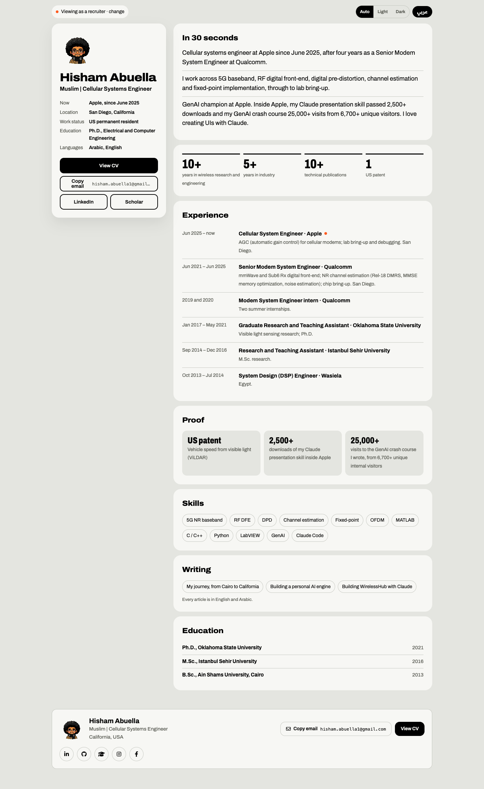
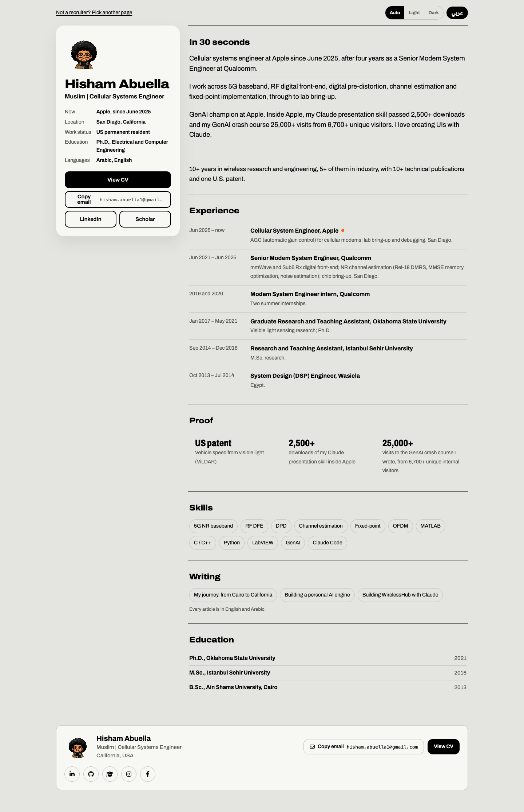
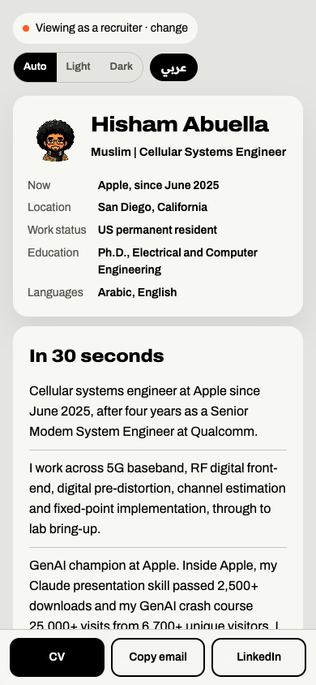
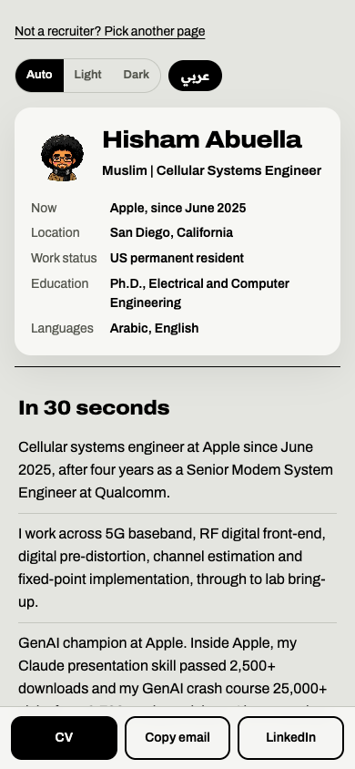
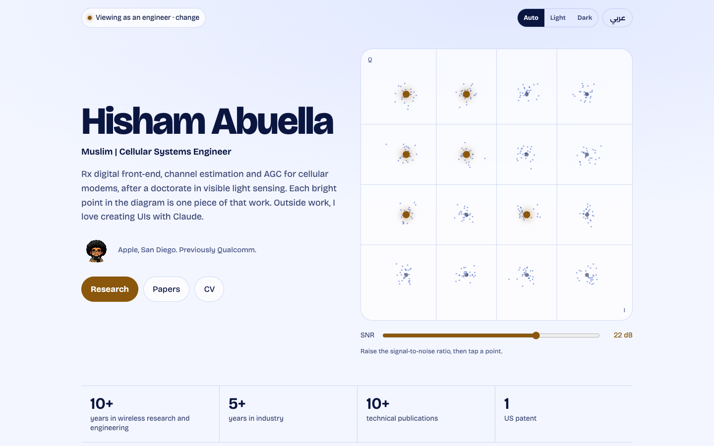
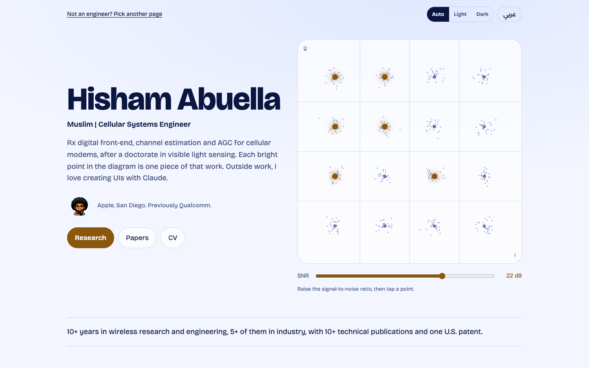
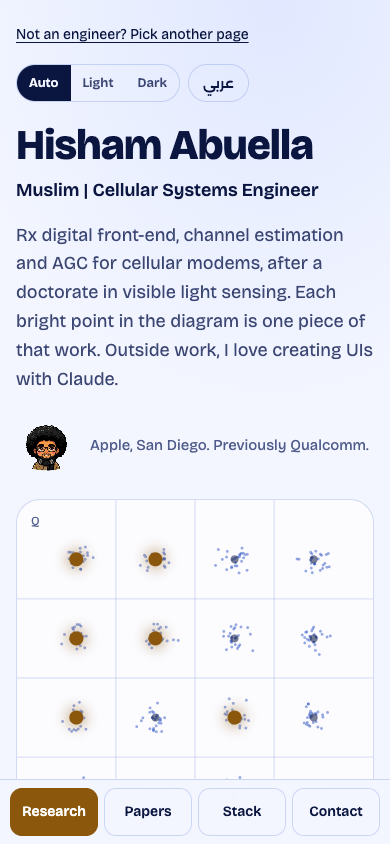

All four changes shown together on the two pages they touch most. Changes: (1) the 10+ / 5+ / 10+ / 1 number strip becomes one sentence; (2) "·" between job title and company becomes a comma; (3) the rounded boxes in the recruiter main column become plain sections with a rule, and the "Viewing as … · change" pill becomes a plain link; (4) slightly looser big headings.






